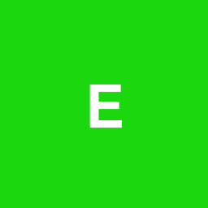
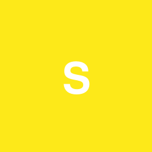
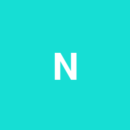
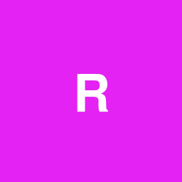

Pet projects

Title: Hide-Seek-2D
Description: 2D online game with survival and fighting elements written in Golang using Ebiten framework
Stack:
- Golang
- SQLite
- Bazel
- GLSL
Links: source code

Title: E-Massage
Description: Service platform for e-commerce project
Stack:
- Python
- Django
- MySQL
- Apache Web Server

Title: SyE
Description: Terminal editor, which supports many widget created using special interface
Stack:
- C++
- Ncurses
- CMake

Title: New-Photo
Description: Service platform(literally, analog of Google Photo), with its own Web-client, Mobile application. There used Machine Learning for sorting and filtering
Stack:
- Golang
- Python
- Tensorflow/Keras
- React/React Native
- JS/TS
- PostgreSQL
- Redis
- gRPC

Title: ResourceTracker
Description:A tool for remote execution in a cloud environment
Stack:
- Java
- Spring Boot
- Kafka
- Terraform
Providers:
- AWS
- GCP
- AZ
- Providers:
- AWS
- GCP
- AZ